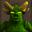

 Goosebumps: HorrorLand
Details
 |
|
| Spielzeit | Nicht gespielt |
| Letzte Aktivität | Nie |
| Hinzugefügt | 26.10.2022 10:12:28 |
| Modifiziert | 10.11.2022 14:03:11 |
| Fertigstellungsstatus | Not Played |
| Bibliothek | Playnite |
| Quelle | |
| Plattform | PlayStation 2 |
| Veröffentlichungsdatum | 29.10.2008 |
| Community Bewertungen | |
| Kritiker Punkte | |
| Benutzerwertung | |
| Genre | ⚙️ Strategie Puzzle |
| Entwickler | Elastic |
| Verleger | Scholastic |
| Eigenschaft | Single Player |
| Links | Official Website Wikia |
| Tag | |
Beschreibung
Goosebumps Horrorland is a Goosebumps game released on October 28, 2008 for the Wii, Nintendo DS, and PlayStation 2. This game was a tie-in to the Goosebumps Horrorland book series released a few months prior to the game. A child receives a ticket to HorrorLand in the mail, not knowing why it was sent to him. His friend Nate then appears and states that he too received a ticket through the mail. But he is not too worried about it and is very happy to get to go to Horrorland. The child asks his mother if they could go and they get dropped off at HorrorLand. As they arrive, they find a monster at the Front Entrance. Nate questions it to be someone as a swamp monster. The guy in the costume says that he is a "Horror" as in "Horrorland". The child says he has a great costume and the Horror lets them in, and then he laughs suspiciously.
At the Theme Park, they both go to Vampire Village where they have made the Fright Restriction, where the rides are more "fun". The child feels nervous and suggests that they should go back to the ride Calamity Canyon. Then Nate runs to a fake coffin and starts to act strangely. He acts as a vampire, lays onto the coffin, & it closes on him. The child struggled to open the coffin, until it opened and Nate disappeared.
Meanwhile, after the child goes on the Roller Ghoster to save a girl named Gigi, he tells her what is going on with Horrorland, until a police Horror (Monster Police) tells him to hand over the girl, they both run to get away until the Horror trips over and they both hide near Roller Ghoster, fooling the Horror. Gigi tells him a hiding place in Vampire Village where he can find her.
At Mad Labs, the child gets a Horror mask from a Horror mask shop. It was the shop owner's last one. The child says it feels like skin, until he puts it on. It then gets stuck on his head and he starts to feel funny, until he turns into a Horror.
Meanwhile in the Secret Tunnels, the child gets caught by Horrifico. He knows that the child is imposter & changes him back into his human form The child says that he is getting out of Horrorland with all the pieces of the ticket. Then, Horrifico then mocks him until the child squirts him with Evil Dust and runs off.
At the Theme Park, they both go to Vampire Village where they have made the Fright Restriction, where the rides are more "fun". The child feels nervous and suggests that they should go back to the ride Calamity Canyon. Then Nate runs to a fake coffin and starts to act strangely. He acts as a vampire, lays onto the coffin, & it closes on him. The child struggled to open the coffin, until it opened and Nate disappeared.
Meanwhile, after the child goes on the Roller Ghoster to save a girl named Gigi, he tells her what is going on with Horrorland, until a police Horror (Monster Police) tells him to hand over the girl, they both run to get away until the Horror trips over and they both hide near Roller Ghoster, fooling the Horror. Gigi tells him a hiding place in Vampire Village where he can find her.
At Mad Labs, the child gets a Horror mask from a Horror mask shop. It was the shop owner's last one. The child says it feels like skin, until he puts it on. It then gets stuck on his head and he starts to feel funny, until he turns into a Horror.
Meanwhile in the Secret Tunnels, the child gets caught by Horrifico. He knows that the child is imposter & changes him back into his human form The child says that he is getting out of Horrorland with all the pieces of the ticket. Then, Horrifico then mocks him until the child squirts him with Evil Dust and runs off.